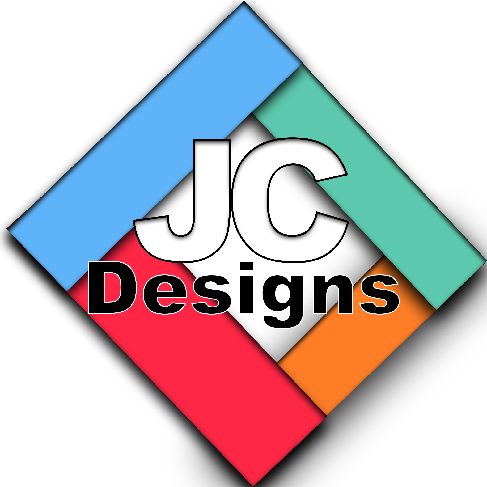

Case study · Self-initiated brand identity
JC Designs logo.
[One sentence: what you made, who it was for, and the main goal.]

- My role
- [e.g. Sole designer]
- For
- [e.g. My freelance studio, JC Designs]
- Timeline
- [e.g. 2 weeks, 2025]
- Tools
- [e.g. Adobe Illustrator, sketchbook]
01 / WHY
The brief
What was the need? Why did JC Designs need a logo, and what did it have to communicate? Were there any constraints?
02 / WHO
The audience
Who needs to recognize and trust this logo (clients, employers, followers)? Where will they see it: website, social media, print, merch?
03 / HOW
Exploring directions
What inspired you? What other directions did you sketch? Why the diamond shape, the four colors and the bold lettering over the alternatives?
04 / WHAT CHANGED
Feedback & revisions
Who gave you feedback (professor, classmates, friends)? What did they say? What did you change because of it?
05 / OUTCOME
Result & reflection
Where is the logo used now? What works well? What would you improve next time (for example, a simpler version for small sizes)?
← Back to case studies · Want to talk about this project? Get in touch.